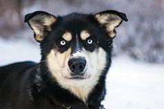
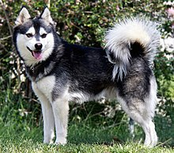
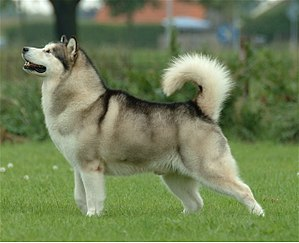
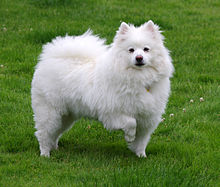
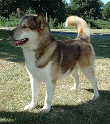
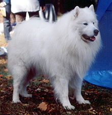
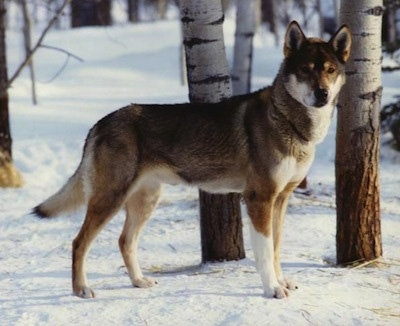
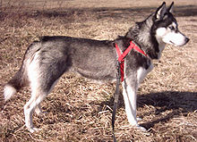

Alaskin Dog Breeder

Alaskan Husky
A breed of medium-sized working sled dog, developed specifically for its performance as such

Alaskan Klee Kai
A spitz-type breed of companion-sized dog resembling
the larger Alaskan Husky and Siberian Husky. It is an energetic,
intelligent dog with an appearance that reflects its northern heritage.

Alaskan Malamute
A large breed of dog that was originally bred for
their strength and endurance to haul heavy freight as a sled dog and hound.

American Eskimo
A breed of companion dog, originating in Germany. This dog has served as a watchdog and a companion.

Greenland Dog
A large breed of husky-type dog kept as a sled dog.
They were brought from Siberia to North America by the Thule people.

Samoyed
A breed of medium-sized herding dogs with thick, white, double-layer coats. They are a spitz-type dog which takes its name from the Samoyedic peoples of Siberia.

Seppala Siberian Sled dog
A true working dog that was deprived from the Siberian Husky. They are medium sized dogs that have longer and stronger legs and more sharp and perked ears.

Siberian Husky
A thickly coated, compact sled dog of medium size and great endurance, was developed to work in packs, pulling light loads at moderate speeds over vast frozen expanses. Husky are friendly, fastidious, and dignified